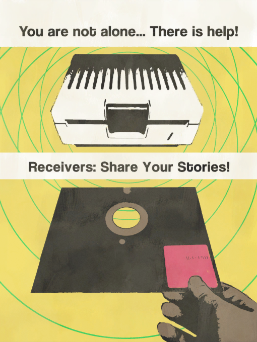
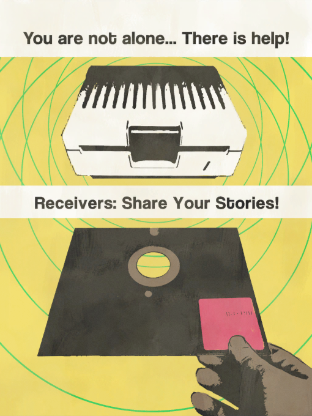

if you find an issue with my website, create an issue on GitHub or tell me on discord @hazmatpants
It's common knowledge that some needs are a higher priority than others. People note that in order to pursue some, others must be fulfilled first. They frame the complex situation using simple, unrealistic examples, like how you can't be happy if you don't have air to breathe. These simplifications are used to hide the more complex truths; that the body sustains the mind and the mind sustains the body.
The most present needs are in the domain of the mind. Without baseline function or thought, you can find yourself without the will to move or eat. Strengthening the mind by developing focus and resilience is the goal of a technique we call Mindtech.